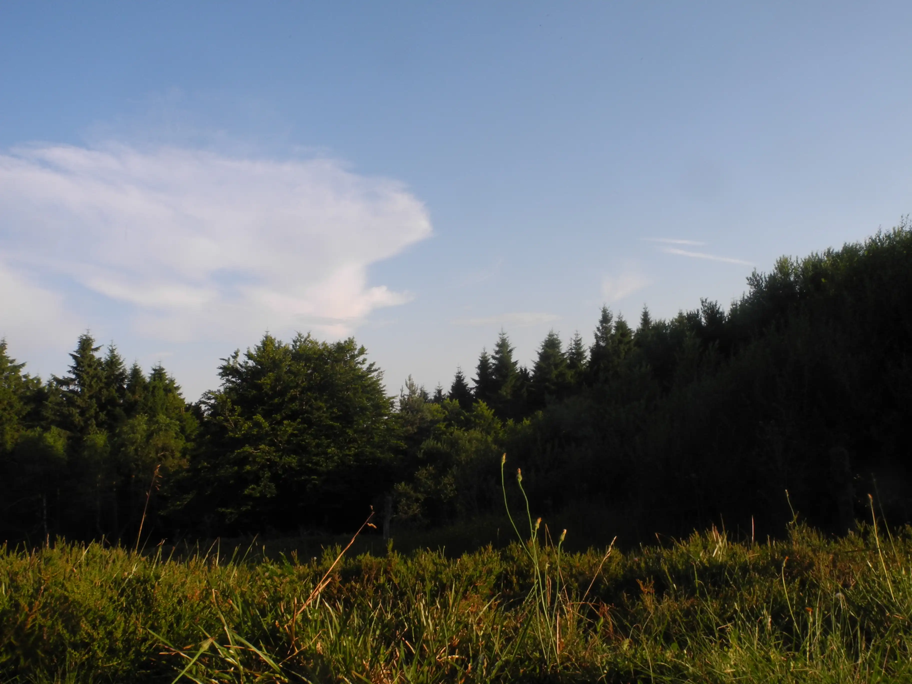
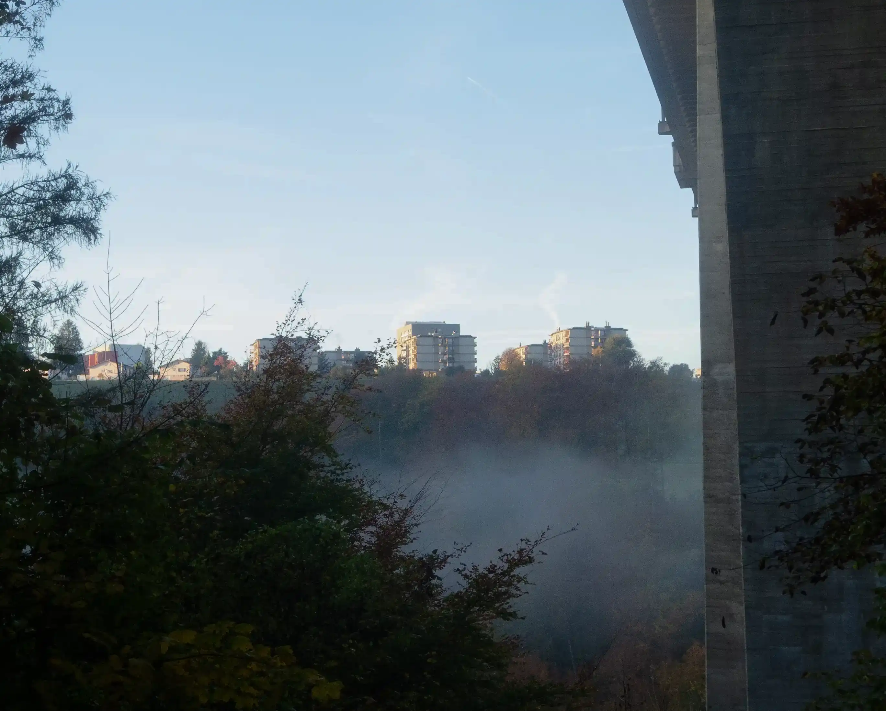
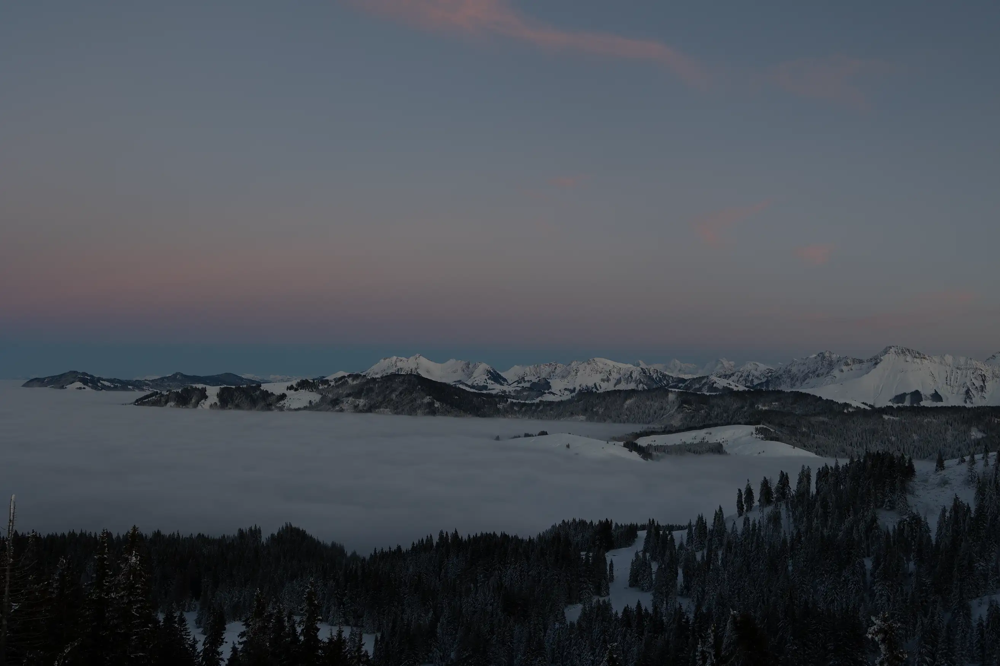

<extends src="base-layout.html" locals='{"script": "contact.js"}'>
  <block name="content">
    <nav class="contact-socials">
      <a href="" target="_blank" class="contact-social">Github</a>
      <a href="" target="_blank" class="contact-social">Instagram</a>
      <a href="" target="_blank" class="contact-social">Codepen</a>
    </nav>
    <div class="contact-texts">
      <p class="contact-text">
        Interested to give me chance for an intership ?
      </p>
      <p class="contact-text">Or wanting to collaborate on a project ?</p>
      <a href="mailto:hello@basile-kamm.ch" class="contact-cta">
        <span class="word">
          <b>h</b>
          <b>e</b>
          <b>l</b>
          <b>l</b>
          <b>o</b>
          <div class="contact-underline"></div>
        </span>
        <b>@</b>
        <span class="word">
          <b>b</b>
          <b>a</b>
          <b>s</b>
          <b>i</b>
          <b>l</b>
          <b>e</b>
          <b>-</b>
          <b>k</b>
          <b>a</b>
          <b>m</b>
          <b>m</b>
          <b>.</b>
          <b>c</b>
          <b>h</b>
          <div class="contact-underline"></div>
        </span>
      </a>
    </div>
    <div class="contact-slideshow-container">
      
      
      
      
      
      
      
      
    </div>
  </block>
</extends>
